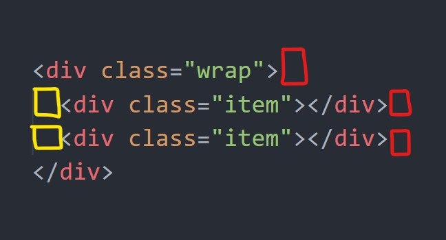

相信不少人都踩過的雷。
前言
這應該已經是個被講到爛的東西，但如果有段時間沒碰 CSS 的話，還真的會不小心又踩到這個雷，所以這裡就當作再複習一遍吧。
問題點
簡單來說，你可能想做這個畫面：
所以你就很直覺的寫了以下：
1 | <div class="wrap"> |
1 | .item { |
結果你卻得到：
嗯…其實是這傢伙在作怪：

空白字元、換行字元
因為換行與空白在 CSS 中都會自動被解析成「一個空格」，所以會產生大約「一個字」的空間，因此那條縫就是這樣產生的。
如何解決
解決的方法很簡單，你有兩條路可以走。
- 讓這些空白字元一開始就不存在
- 讓這些空白字元所產生的空間小到你感覺不到。
所以你可以：
- 重新調整 HTML，讓標籤緊黏著標籤
- HTML 註解法，空白/換行 的部分改成 HTML 註解
- 省略 HTML 的閉合標籤（但不建議這樣做…）
- 對元素設定 margin 負值（
margin-right: -4px，大概就是一個字的大小） - 在父層設定
font-size: 0，但要注意 繼承問題，子層的文字大小也會被設為 0。 - 不要用 inline-block，就是這麼簡單又暴力
詳細可以參考 這裡
Codepen：
See the Pen inline-block中的魔法間距-01 by jim (@jubeatt) on CodePen.